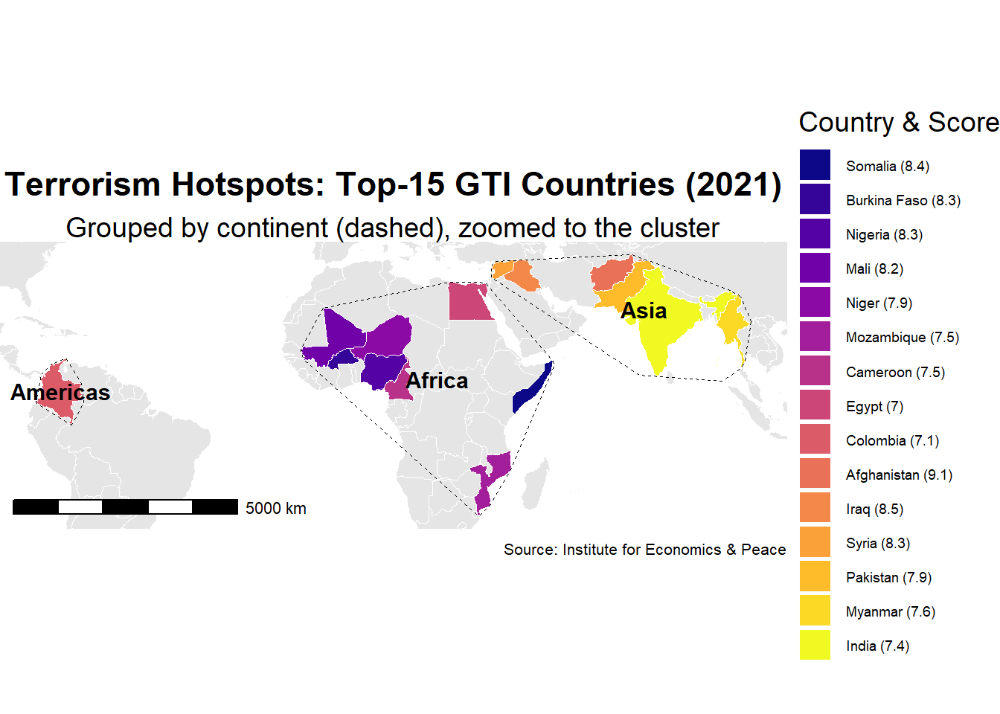
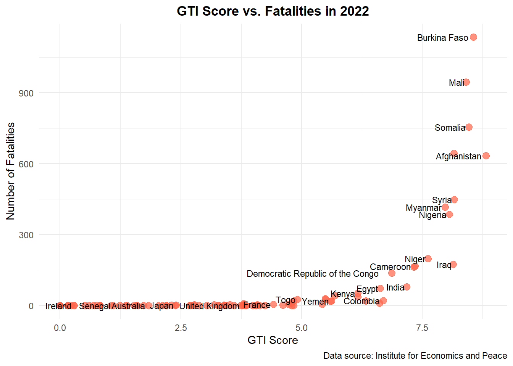

Improving the Global Terrorism Index Visualization
Author
Coral Team
Introduction
The original chart visualizing the Global Terrorism Index lacked clarity in terms of trends and country comparisons across time. Our objective is to improve interpretability while preserving the integrity of the data.
Original Visualization
Original GTI Chart
<<<<<<< Updated upstream
Comparison Table: Strengths vs. Areas for Improvement
What Works Well ✅
=======
Critical Evaluation of Original Visualization
What Works Well ✅
>>>>>>> Stashed changes
Clear Title and Subtitle: “The World’s Terrorism Hotspots” effectively communicates purpose; subtitle explains GTI basis
Effective Chart Type: Bar chart efficiently compares values across countries
Appropriate Color Theme: Consistent deep red reinforces severity theme suitable for the topic
Enhanced Country Identification: Flags help users quickly identify nations without reading all names
Precise Data Display: Numeric scores clearly labeled on each bar for accurate comparison
Proper Attribution: Correctly cites “Institute for Economics and Peace” with methodology explanation
<<<<<<< Updated upstream
What Could Be Improved ❌
=======
What Could Be Improved ❌
>>>>>>> Stashed changes
Missing Geographic Context: No map or regional grouping to show concentration in Africa/Middle East
Limited Color Accessibility: Dark maroon with white text may reduce legibility for some viewers
Lack of Interactivity: Static image prevents exploration of additional data dimensions
Absent Temporal Context: No visualization of trends over time despite 5-year data availability
Unclear Score Interpretation: Lacks scale context to help viewers understand meaning of scores
<<<<<<< Updated upstream
Data Preparation
=======
Our Improved Visualizations
Data Preparation and Processing
>>>>>>> Stashed changes
We used the Global Terrorism Index 2023.xlsx file from the Institute for Economics and Peace. The Overall Scores sheet was selected due to its completeness and structured format.
library(readxl)library(dplyr)
Attaching package: 'dplyr'
The following objects are masked from 'package:stats':
filter, lag
The following objects are masked from 'package:base':
intersect, setdiff, setequal, union
library(tidyr)library(ggplot2)# Load the datadf <-read_excel("data/Global Terrorism Index 2023.xlsx", sheet ="Overall Scores")
Transforming Data for Analysis
We reshapes a data frame (df) containing country scores by year into a long format, making each row represent a country-year-score combination. It then identifies the top 15 countries based on their 2022 scores and filters the long-format data to include only these countries. This prepares the data for focused analysis or visualization of the top performers over time.
# Convert to long formatlong_df <- df %>%pivot_longer(cols =matches("^[0-9]{4} Score$"), names_to ="Year", values_to ="Score") %>%mutate(Year =as.integer(gsub(" Score", "", Year)))# Filter top 15 countries based on latest scoretop15 <- df %>%select(Country, `2022 Score`) %>%arrange(desc(`2022 Score`)) %>%slice(1:15) %>%pull(Country)filtered_df <- long_df %>%filter(Country %in% top15)
Visualization : Trend Analysis with Severity Classification
This visualization addresses the original chart’s lack of temporal context by showing how terrorism impacts have changed over a decade (2012-2022). We’ve added color-coded severity bands to provide clear context for score interpretation.
library(ggplot2)library(dplyr)ggplot(filtered_df, aes(x = Year, y = Score)) +# Severity background bands (more visible)annotate("rect", xmin =-Inf, xmax =Inf, ymin =8, ymax =10,fill ="#B22222", alpha =0.15) +annotate("rect", xmin =-Inf, xmax =Inf, ymin =6, ymax =8,fill ="#FF8C00", alpha =0.15) +annotate("rect", xmin =-Inf, xmax =Inf, ymin =4, ymax =6,fill ="#FFD700", alpha =0.15) +annotate("rect", xmin =-Inf, xmax =Inf, ymin =0, ymax =4,fill ="#90EE90", alpha =0.15) +# Add labels to indicate severity zonesannotate("text", x =2013, y =9, label ="Severe", color ="#8B0000", size =4, fontface ="bold") +annotate("text", x =2013, y =7, label ="High", color ="#FF8C00", size =4, fontface ="bold") +annotate("text", x =2013, y =5, label ="Moderate", color ="#DAA520", size =4, fontface ="bold") +annotate("text", x =2013, y =2, label ="Low", color ="#228B22", size =4, fontface ="bold") +# Main line chartgeom_line(color ="#000000", linewidth =1.2) +geom_point(color ="#000000", size =1.2) +# Faceted by countryfacet_wrap(~Country, ncol =5) +theme_minimal(base_size =12) +labs(title ="Terrorism Index Trends by Country (2012–2022)",subtitle ="GTI Scores Categorized by Severity Levels",x ="Year",y ="GTI Score (0–10)\nHigher = More Impact from Terrorism" ) +theme(plot.title =element_text(size =16, face ="bold", hjust =0.5),plot.subtitle =element_text(size =13, hjust =0.5),strip.text =element_text(size =11, face ="bold"),axis.text.x =element_text(angle =45, hjust =1),panel.grid.minor =element_blank() )

Terrorism Index Trends by Country (2012–2022), with Severity Levels
<<<<<<< Updated upstream
# ─── Top-15 GTI Map with Discrete Country Legend ───# Install any missing packages (once):# install.packages(c(# "readxl","dplyr","tidyr","sf","rnaturalearth","ggplot2",# "viridis","ggspatial","ggrepel","countrycode"# ))library(readxl)library(dplyr)library(tidyr)library(sf)
Linking to GEOS 3.13.1, GDAL 3.11.0, PROJ 9.6.0; sf_use_s2() is TRUE
library(ggspatial)library(ggrepel)library(countrycode)library(grid) # for unit()# 1. Load & reshape the GTI datadf <-read_excel("data/Global Terrorism Index 2023.xlsx",sheet ="Overall Scores")long_df <- df %>%pivot_longer(cols =matches("^[0-9]{4} Score$"),names_to ="Year",values_to ="Score" ) %>%mutate(Year =as.integer(sub(" Score", "", Year)))# 2. Identify Top-15 countries by GTI in 2021top15_2021 <- long_df %>%filter(Year ==2021) %>%slice_max(Score, n =15) %>%pull(Country)# 3. Load world map & join scores for those Top-15, add continentworld <-ne_countries(scale ="medium", returnclass ="sf")world_top15 <- world %>%filter(name %in% top15_2021) %>%left_join( long_df %>%filter(Year ==2021) %>%select(Country, Score),by =c("name"="Country") ) %>%mutate(continent =countrycode(name,origin ="country.name",destination ="continent"))# 4. Compute bounding box + small buffer for zoombb <-st_bbox(world_top15)xbuf <- (bb$xmax - bb$xmin) *0.05ybuf <- (bb$ymax - bb$ymin) *0.05xlims <-c(bb$xmin - xbuf, bb$xmax + xbuf)ylims <-c(bb$ymin - ybuf, bb$ymax + ybuf)# 5. Build continent envelopes (convex hulls)hulls <- world_top15 %>%group_by(continent) %>%summarise(geometry =st_union(geometry), .groups ="drop") %>%st_convex_hull()# 6. Label locations for those envelopes (geometry-only centroids)hull_centroids <-st_centroid(st_geometry(hulls))hull_labels <-as_tibble(st_coordinates(hull_centroids)) %>%bind_cols(select(hulls, continent))# 7. Prepare discrete legend labels ordered by descending Scoreworld_top15 <- world_top15 %>%arrange(desc(Score)) %>%mutate(lbl =paste0(name, " (", round(Score,1), ")"),lbl =factor(lbl, levels =unique(lbl)) )# 8. Generate a palette so that highest-score is darkestn <-nrow(world_top15)palette <-viridis(n, option ="plasma") # dark purple → yellownames(palette) <-levels(world_top15$lbl)# 9. Draw the mapggplot() +# a) world backgroundgeom_sf(data = world,fill ="grey90",color ="white",size =0.1) +# b) highlight Top-15, fill by discrete labelgeom_sf(data = world_top15,aes(fill = lbl),color ="white",size =0.2) +# c) dashed continent envelopesgeom_sf(data = hulls,fill =NA,color ="black",linetype ="dashed",size =0.5) +# d) continent labelsgeom_text(data = hull_labels,aes(X, Y, label = continent),fontface ="bold",size =3.5) +# e) discrete fill scale ordered by descending Scorescale_fill_manual(values = palette,name ="Country (GTI Score 2021)",guide =guide_legend(ncol =1,byrow =FALSE,keywidth =unit(0.4, "cm"),keyheight =unit(0.3, "cm"),label.theme =element_text(size =6) ) ) +# f) zoom to hotspot regioncoord_sf(xlim = xlims,ylim = ylims,expand =FALSE) +# g) scale barannotation_scale(location ="bl",width_hint =0.2,pad_x =unit(0.5, "cm"),pad_y =unit(0.5, "cm")) +# h) titles & captionlabs(title ="Terrorism Hotspots: Top-15 GTI Countries (2021)",subtitle ="Darkness reflects descending GTI score; dashed = continental groups",caption ="Source: Institute for Economics & Peace" ) +# i) clean theme + margins + legend sizingtheme_void(base_size =14) +theme(plot.title =element_text(face ="bold", hjust =0.5, size =16, margin =margin(b =4)),plot.subtitle =element_text(hjust =0.5, size =10, margin =margin(b =8)),plot.caption =element_text(size =8, margin =margin(t =8)),plot.margin =margin(t =20, r =20, b =20, l =20),legend.position ="right",legend.key =element_rect(fill ="white", color =NA),legend.background =element_rect(fill ="white", color =NA),legend.title =element_text(size =9, face ="bold"),legend.text =element_text(size =6) )
Scale on map varies by more than 10%, scale bar may be inaccurate
GTI Score vs. Fatalities (2022) [Another Example]
To assess how well the GTI score reflects actual impact, we visualized the relationship between the 2022 score and the number of fatalities from terrorist incidents.
library(readxl)library(dplyr)library(ggplot2)# Load 2022 datadata_2022 <-read_excel("data/Global Terrorism Index 2023.xlsx", sheet ="2022")# Clean column names if necessarycolnames(data_2022) <-make.names(colnames(data_2022))# Filter out missing valuesdata_clean <- data_2022 %>%filter(!is.na(Score) &!is.na(Fatalities))# Create scatter plotggplot(data_clean, aes(x = Score, y = Fatalities, label = Country)) +geom_point(color ="tomato", size =3, alpha =0.7) +geom_text(size =3, hjust =1.1, check_overlap =TRUE) +theme_minimal() +labs(title ="GTI Score vs. Fatalities in 2022",x ="GTI Score",y ="Number of Fatalities",caption ="Data source: Institute for Economics and Peace") +theme(plot.title =element_text(hjust =0.5, face ="bold"))

Insight:
=======
Key Insights from Trend Analysis:
>>>>>>> Stashed changes
Afghanistan, Iraq, and Syria show consistently high terrorism impacts over the decade
Several countries show declining trends (Iraq, Nigeria) while others show recent increases (Burkina Faso)
The color-coded severity bands provide immediate context for interpreting the GTI scores
Conclusion and Impact
Our improved visualizations address the key shortcomings of the original chart:
Added Temporal Context: We now show trends over 10 years instead of a static snapshot
Improved Score Interpretation: Color-coded severity bands make it easier to understand what the scores mean
Enhanced Visual Neutrality: Removed potentially biased imagery while maintaining clarity
Better Accessibility: Improved color contrasts and clear labeling